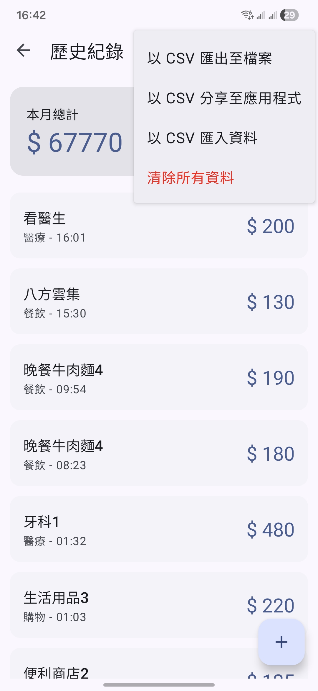
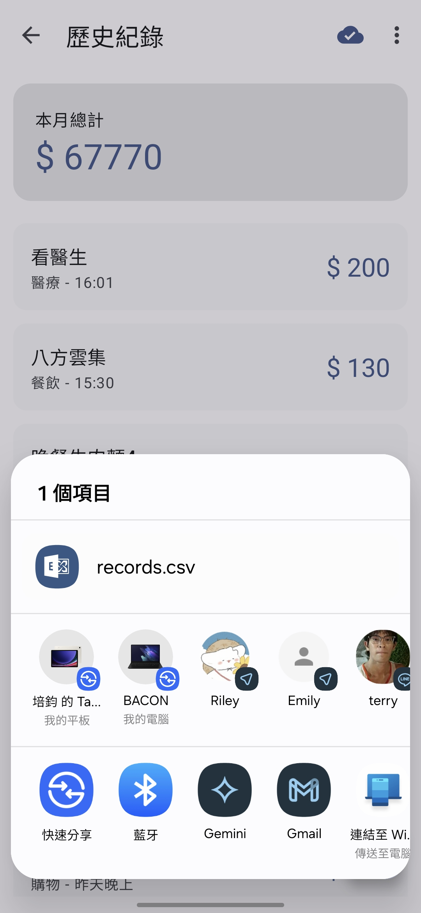
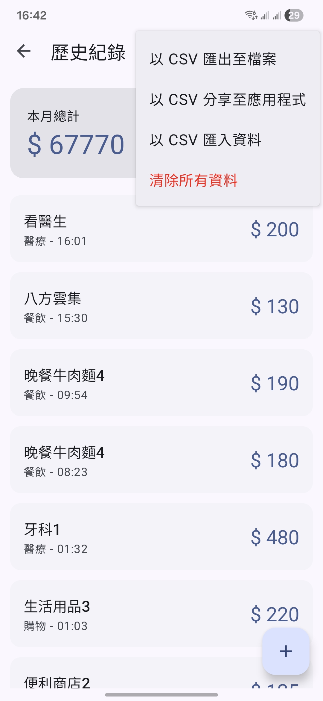
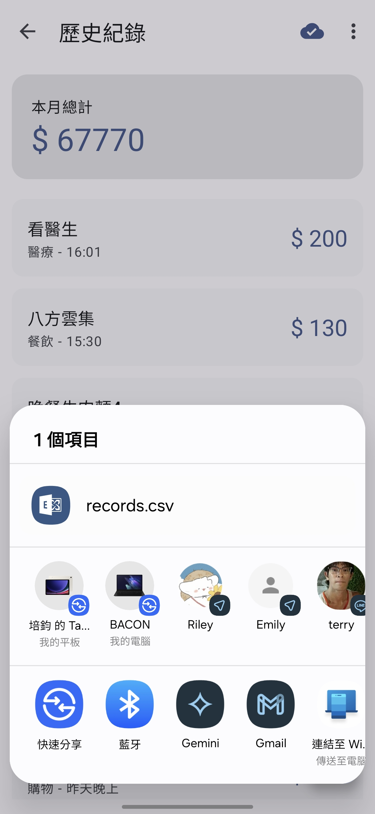
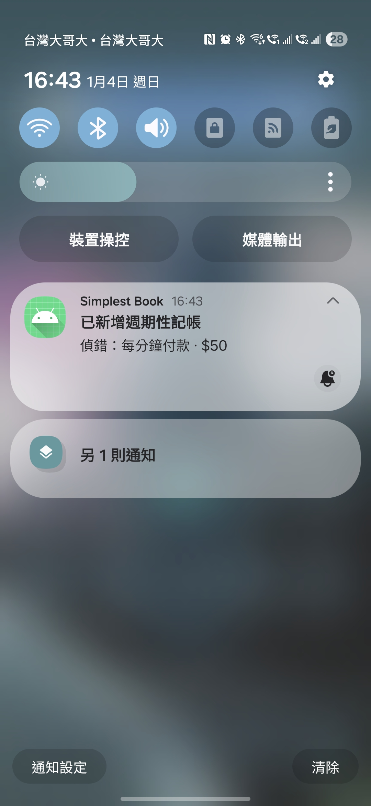
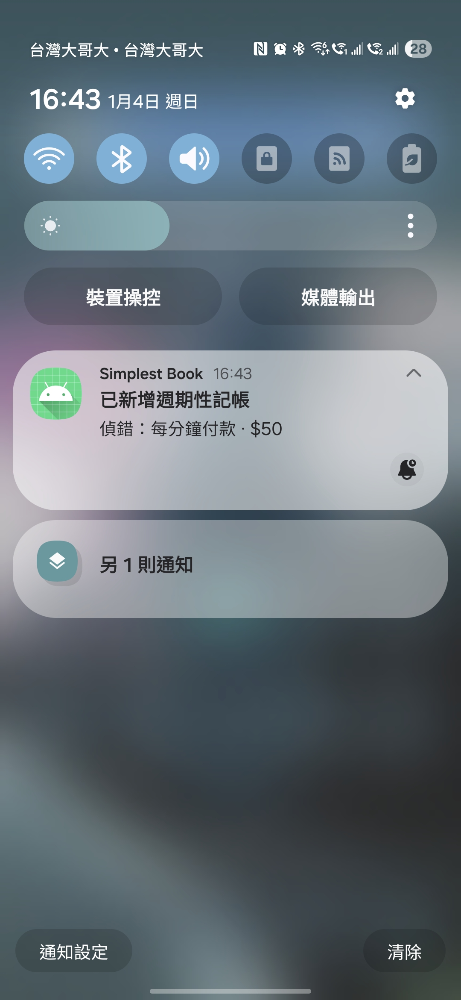

專題名稱：Simplest Book Android 極簡記帳
組長：孫培鈞 電子三甲 112360104
組員：方宇澤 光電四 111650037
Github 連結：https://github.com/dao-you/SimplestBookAndroid
影片連結：https://youtu.be/rfOhHyM-GJQ
因記帳為日常中需要一直執行的內容，就像是過捷運閘門一樣，大家永遠都在思考要如何越簡單、越快速最好。市面上的記帳軟體卻常常有很多複雜的附加功能，造成這個小動作變得很麻煩，因此有了此專案的前身 - SimeplestBookkeepingPWA，它是使用 Python flask 撰寫的 PWA App，以伺服器端儲存為核心運作。
但是網頁應用程式仍然有不少缺點，首先是雖然已經做了本地介面快取，也做了可以安裝在桌面的措施，但在手機上受限於瀏覽器沒辦法常駐在背景運作，所以開啟的速度還是很慢，並且資料寫入基於網路請求，常常也需要等一段時間，在網路不穩定的地方例如電梯進出，還常常會失敗。
因此我們希望基於同樣的設計理念，設計一個 Android 原生應用程式的版本，用同樣最簡化流程的方法，改善以上缺點。並且增加背景雲端備份，承襲伺服器端儲存的優點，也更可以推廣給所有人使用，不須要自己先架設一台網頁伺服器。
請說明小組成員的分工內容，可使用條列方式說明每位成員負責的項目。
成員一：Dao-you 孫培鈞 電子三甲 112360104
成員二：terry 方宇澤 光電四 111650037
Branch Neteork 圖


整體運作流程
flowchart TD
subgraph U["使用者前景流程"]
UA["啟動 App (SimplestBookApplication)"] --> UB["MainActivity.onCreate() 綁定 UI/偏好"]
UB --> UC["loadCategories() 從 SQLite 載入類別"]
UB --> UD["checkPermission() 申請定位權限"]
UB --> UE["checkRecurringNotificationPermission() 申請通知權限"]
UB --> UF["onResume()"]
UF --> UG["loadCategories() 重新整理"]
UF --> UH["prefetchLocation() 預抓座標"]
UF --> UI["CloudBackupManager.verifyPendingSync()"]
UJ["輸入金額/備註後送出"] --> UK["saveRecord() 驗證金額/備註"]
UK --> UL{"類別已選?"}
UL -->|"否且預設=自動"| UM["saveWithPlaceholderThenAutoSelect()"]
UL -->|"否"| UN["提示請選擇類別"]
UL -->|"是"| UO["saveRecordWithCategory()"]
UM --> UO
UO --> UP{"定位開啟?"}
UP -->|"否"| UQ["以 0,0 儲存"]
UP -->|"是"| UR{"已預抓座標?"}
UR -->|"是"| US["使用預抓座標寫入"]
UR -->|"否"| UT["getLastLocation() 取得/失敗 -> 0,0"]
US --> UV["performDatabaseSave() 寫入 SQLite"]
UT --> UV
UQ --> UV
UV --> UW["completeSave() 清空欄位"]
UW --> UX{"自動跳歷史頁?"}
UX -->|"是"| UY["開啟 HistoryActivity"]
UX -->|"否"| UZ["留在主畫面並再預抓定位"]
UAA["使用者離開 App/按返回"] --> UAB["StatusChipService.show()"]
end
subgraph B["背景/輔助服務"]
UV --> BA["CloudBackupManager.requestSyncIfEnabled()"]
BA --> BB["FirebaseAuth 取使用者"]
BB --> BC{"已登入?"}
BC -->|"是"| BD["讀取 records/categories/recurring 並上傳 Firestore"]
BC -->|"否"| BE["更新狀態為 ERROR"]
BD --> BF["scheduleVerify() 驗證筆數"]
UV --> BG["(自動類別) AutoCategoryService.start()"]
BG --> BH["AutoCategoryClient 呼叫 API"]
BH --> BI{"回傳類別"}
BI -->|"成功"| BJ["更新 SQLite 類別"]
BI -->|"失敗"| BK["回退 '其他'"]
BJ --> BL["CloudBackupManager.requestSyncIfEnabled()"]
BK --> BL
BL --> BM["Broadcast ACTION_RECORD_UPDATED"]
BM --> BN["HistoryActivity 收到後重載"]
UAB --> BO["查詢 getTotalAmount() 並顯示 Overlay"]
UB --> BP["RecurringPaymentWorker.schedule()/AlarmReceiver.scheduleAllMinute()"]
BP --> BQ["每日 WorkManager + 每分鐘 Alarm 插入到期紀錄"]
end
subgraph S["設定/權限入口"]
SA["SettingsActivity 切換定位/預設類別/自動歷史"] --> UB
SA --> SB["設定 Google 登入與雲端備份開關"] --> BA
SA --> SC["填入自動分類 API Key/URL"] --> BG
end
週期性付款功能運作流程
flowchart TD
A["RecurringPaymentActivity 開啟"] --> B["新增/編輯項目 (RecurringPaymentEditActivity)"]
B --> C["save() 寫入 SQLite recurring_payments"]
C --> D{"頻率類型"}
D -->|"daily/weekly/monthly"| E["RecurringPaymentWorker.schedule() 排 WorkManager"]
D -->|"minute"| F["RecurringPaymentAlarmReceiver.scheduleAllMinute() 排 Alarm"]
E --> G["每日觸發 doWork() 檢查 lastRunAt"]
F --> H["每分鐘 onReceive() 判斷 minute 項目"]
G --> I{"到期?"}
H --> I
I -->|"是"| J["insertRecordAndReturnId() 寫入紀錄"]
J --> K["Notification 發送已新增紀錄" ]
K --> L["CloudBackupManager.requestSyncIfEnabled() 同步"]
I -->|"否"| M["重新排程等待下一次"]
雲端備份功能運作流程
graph LR
subgraph Cloud["啟用與同步"]
A["SettingsActivity 切換雲端備份 ON"] --> B["Google 登入 FirebaseAuth"]
B --> C{"登入成功?"}
C -->|"是"| D["CloudBackupManager.syncNow()" ]
C -->|"否"| E["updateStatus(ERROR) 等待使用者重試"]
D --> F["readRecords()/readCategories()/readRecurring()" ]
F --> G["Firestore backups/latest set(payload)"]
G --> H["scheduleVerify() 依筆數驗證" ]
H --> I{"筆數符合?"}
I -->|"是"| J["updateStatus(SUCCESS)" ]
I -->|"否"| K["重試驗證或標記 ERROR"]
end
subgraph Restore["還原流程"]
L["使用者點擊手動還原"] --> M["restoreFromCloud() 下載最新備份"]
M --> N{"資料存在?"}
N -->|"有"| O["背景執行 restoreRecords()/restoreCategories()/restoreRecurring()" ]
O --> P["updateStatus(SUCCESS) 並回呼 UI" ]
P --> Q["重新排程 WorkManager/Alarm"]
N -->|"無"| R["updateStatus(ERROR: empty backup)"]
end
用到的函式庫：
以下依 .java 檔案說明其功能、主要方法/流程、資料來源與對應 UI，並附上 Mermaid 圖表：
SimplestBookApplication.javaonCreate()flowchart TD
A["App 啟動"] --> B["onCreate() 呼叫 Application"]
B --> C["DynamicColors.applyToActivitiesIfAvailable() 套用色彩"]
C --> D["所有 Activity 綁定動態主題"]
MainActivity.javaamountInput, noteInput, categoryGrid, saveButton, topAppBar, recurringFabloadCategories() 從 SQLite 載入類別並補入「其他」。saveRecord() 驗證輸入，取得類別後進入定位流程。performDatabaseSave() 背景寫入 SQLite，呼叫雲端同步。saveWithPlaceholderThenAutoSelect() 先存「其他」再啟動 AutoCategoryService。checkPermission() 申請定位權限；prefetchLocation() 預先抓取座標。onUserLeaveHint()/返回鍵觸發 StatusChipService 顯示離開時總額。DatabaseHelper、SharedPreferences、FusedLocationProviderClientactivity_main.xmlflowchart TD
A["onCreate() 綁定 UI+Toolbar + 檢查定位權限"] --> B["loadCategories() 載入/預設類別"]
B --> C["prefetchLocation() 預抓座標"]
C --> D["使用者輸入金額/備註後送出"]
D --> H["saveRecord() 驗證欄位"]
H --> E{{"類別來源"}}
E -->|"Grid 手動"| F["使用選擇的類別"]
F --> I{{"定位取得 getLastLocation()"}}
E -->|"AI 自動"| G["saveWithPlaceholderThenAutoSelect()" ]
I -->|"預取成功"| J["使用預取座標寫入"]
I -->|"關閉或失敗"| L["以 0,0 儲存"]
J --> M["performDatabaseSave() 寫入 SQLite"]
L --> M
M --> N["completeSave() 清空欄位"]
N --> O{{"自動跳歷史?"}}
O -->|"是"| P["startActivity(HistoryActivity)"]
O -->|"否"| D
G --> R["AutoCategoryService.start() 背景分類"]
R --> Z["廣播 ACTION_RECORD_UPDATED"]
Z --> I
HistoryActivity.javahistoryListView, totalAmountText, cardTotal, historyToolbar, fabAddloadRecords() 背景讀取 SQLite，計算總額並更新 ListView。recordUpdatedReceiver 接收廣播後重新載入並動畫提示。exportToFile()/shareByCsv() 產出 CSV；importFromCsv() 可 Append/Overwrite。DatabaseHelper、CsvHelperactivity_history.xmlflowchart TD
A["onCreate() 綁定 Toolbar/ListView"] --> B["loadRecords() 背景查 SQLite"]
B --> C["計算總額/筆數並更新卡片"]
C --> D["setAdapter() 顯示 ListView"]
D --> E{{"使用者操作"}}
E -->|"點擊項目"| F["開啟 EditRecordActivity"]
E -->|"匯出分享"| G["CsvHelper.shareCsv()/exportToFile()"]
E -->|"匯入"| H["CsvHelper.importCsv() 解析/寫入"]
I["Broadcast ACTION_RECORD_UPDATED"] --> B
EditRecordActivity.javaeditAmountInput, editNoteInput, editTimeInput, editCategoryGrid, mapContainershowDateTimePicker() 修改時間。FullMapActivity。handlePrimaryAction() 判斷是否變更，更新或刪除。DatabaseHelper、Geocoderactivity_edit_record.xmlflowchart TD
A["接收 Intent(id 等欄位)"] --> B["填入金額/備註/時間"]
B --> C{{"是否有座標"}}
C -->|"有"| D["顯示地圖預覽 + 逆地理文字"]
D --> E["點擊開啟 FullMapActivity"]
C -->|"無"| F["隱藏地圖卡片"]
E --> G{{"使用者操作"}}
F --> G
G -->|"修改並更新"| H["handlePrimaryAction() 更新 SQLite"]
G -->|"按下刪除按鈕"| I["刪除確認 Dialog"]
ChartActivity.javatotalAmountText、totalCountText、averageAmountText、chartContainer（動態加入 item_chart_bar.xml）。loadChart() 以背景執行緒呼叫 DatabaseHelper.readRecordList()，將 Record 依類別聚合並計算總額與平均。renderChart()，依最大值計算百分比並產生每個條狀項目。DatabaseHelper 的記帳表查詢。activity_chart.xml、item_chart_bar.xmlflowchart TD
A["onCreate() 綁定 Toolbar"] --> B["loadChart() 啟動背景查詢"]
B --> C["DatabaseHelper.readRecordList() 取得 Record 清單"]
C --> D["依類別聚合金額/計數"]
D --> E["計算總額/平均/排序"]
E --> F["renderChart() 產生條狀項目"]
F --> G["設定 TextView 顯示統計"]
FullMapActivity.javaSupportMapFragment、locationNameView、locationCard、editLocationName() 的 Dialog。onMapReady() 以 CameraUpdateFactory 聚焦並更新卡片文字；點擊卡片呼叫 showEditLocationDialog()。DatabaseHelper.updateRecordLocationName() 寫回並重新顯示。DatabaseHelper（更新記錄欄位）。activity_full_map.xmlflowchart TD
A["接收 Intent(recordId, lat, lng, name)"] --> B["onMapReady() 顯示 Marker"]
B --> C["相機縮放/顯示名稱"]
C --> D["點擊地點名稱卡片"]
D --> E["showEditLocationDialog() 輸入備註"]
E --> F["DatabaseHelper.updateRecordLocationName()"]
F --> D
SettingsActivity.javaMaterialSwitch、API Key/URL TextInputEditText、雲端備份/還原按鈕、偵錯資料插入按鈕。SharedPreferences 載入各項設定並綁定 UI；切換定位、自動跳歷史、預設類別、自動分類 API 時立即寫回偏好。handleGoogleSignIn() 透過 GoogleSignInClient 取得 IdToken，FirebaseAuth 登入成功後啟用 CloudBackup，並可手動 syncNow() 或 restoreFromCloud()。RecurringPaymentWorker.schedule() 與 RecurringPaymentAlarmReceiver.scheduleAllMinute()，確保排程更新。SharedPreferences、FirebaseAuth、GoogleSignInClient、CloudBackupManager。activity_settings.xmlflowchart TD
A["onCreate() 綁定所有 Switch/Input"] --> B["讀取 SharedPreferences" ]
B --> C["即時 setOnCheckedChangeListener() 寫回偏好"]
StatusChipService.javaMainActivity.onUserLeaveHint() 或返回鍵觸發，先檢查 Settings.canDrawOverlays() 權限。DatabaseHelper.getTotalAmount() 取得總額，組合顯示文字與關閉計時器。WindowManager.addView() 顯示 activity_status_chip.xml，5 秒後自動 removeView()。DatabaseHelper。activity_status_chip.xmlflowchart TD
A["onStartCommand() 收到觸發"] --> B{{"Overlay 權限?"}}
B -->|"有"| C["背景讀取 getTotalAmount()"]
B -->|"無"| D["顯示無法覆蓋訊息"]
C --> E["WindowManager 顯示 Chip"]
E --> F["Handler 延遲 5 秒移除"]
AutoCategoryService.javaMainActivity.saveWithPlaceholderThenAutoSelect() 帶入紀錄 ID、金額、備註與候選類別；服務啟動後讀取 SharedPreferences 取 API Key/URL。AutoCategoryClient.requestAutoCategory() 組合模型、提示詞與候選列表發出 HTTP 請求，若主模型無效自動切換備援模型再試。DatabaseHelper.updateRecordCategory() 寫回，CloudBackupManager.requestSyncIfEnabled() 同步 Firestore，並 sendBroadcast(ACTION_RECORD_UPDATED) 提醒 UI 重載。AutoCategoryClient、DatabaseHelper、CloudBackupManager。flowchart TD
A["Service onStartCommand(recordId, amount, note, options)"] --> B["讀取 API Key/URL"]
B --> C["呼叫 OpenAI API 推理類別"]
C --> D{{"取得類別?"}}
D -->|"是"| E["updateRecordCategory() 寫回 SQLite"]
D -->|"否"| F["回退預設 '其他'"]
E --> G["觸發雲端同步"]
F --> G
G --> H["廣播通知 UI 更新"]
AutoCategoryClient.javanormalizeApiUrl()/normalizeToken() 將使用者輸入的 URL 與 Token 標準化，避免重複的 slash 或 header 格式錯誤。requestOnce() 建立 prompt/候選列表後送出 POST，依 HTTP 代碼或 response 內容判斷模型有效性。getFallbackModel() 選擇備援名稱並重試；成功時 parseCategoryFromResponse() 解析訊息內容回傳單一分類字串。flowchart TD
A["normalizeApiUrl()/normalizeToken() 處理輸入"] --> B["requestOnce() 組 JSON 並送出"]
B --> C{{"回應成功?"}}
C -->|"是"| D["parseCategoryFromResponse() 解析類別"]
C -->|"否"| E{{"有備援模型?"}}
E -->|"是"| F["切換 fallback 後重試"]
F --> C
E -->|"否"| G["回傳 null 表示失敗"]
ManageCategoriesActivity.javaRecyclerView 類別清單、輸入框、addCategoryButton、ItemTouchHelper 拖曳手把。loadCategories() 於背景讀取類別並以 CategoryAdapter 套用顏色樣式後顯示。ItemTouchHelper 的 onMove() 交換列表位置並 clearView() 內迭代呼叫 updateCategoryOrder() 寫回排序欄位。deleteCategory() 並重新整理列表。DatabaseHelper。activity_manage_categories.xmlflowchart TD
A["onCreate() 綁定 RecyclerView"] --> B["loadCategories() 背景查詢"]
B --> C["顯示 CategoryAdapter"]
C --> D{"拖曳/刪除動作"}
D -->|"拖曳"| E["onMove() 交換順序"]
E --> F["clearView() updateCategoryOrder() 寫回"]
D -->|"刪除"| G["彈窗確認後 deleteCategory()"]
G --> B
DatabaseHelper.javaonCreate() 建立三張表並呼叫 seedCategories() 插入預設類別；onUpgrade() 覆蓋重建處理版本升級。insertRecordAndReturnId()、updateRecord()、deleteRecord() 等方法，並支援批次匯入與排序更新。getTotalAmount() 為離開提示、readRecordList() 為圖表與歷史頁提供資料，readRecurringPayments()/updateRecurringPayment() 支援排程。flowchart TD
A["SQLiteOpenHelper.onCreate() 建表"] --> B["seedCategories() 預設類別"]
B --> C["CRUD: insert/update/delete/query"]
C --> D["getTotalAmount()/readRecordList() 提供前景"]
C --> E["readRecurringPayments()/updateCategoryOrder() 等輔助"]
CsvHelper.javagenerateCsvContent(records) 把 Record 清單轉成含地點文字與經緯度的 CSV 字串。writeCsvToUri()/shareCsv() 透過 FileProvider 暴露 content URI 供分享或儲存。importCsv() 逐列解析，先用 Geocoder 反查座標，再回傳 Record 清單給呼叫端寫入 SQLite。Geocoder、FileProvider、DatabaseHelper（寫入端）。flowchart TD
A["Record 清單"] --> B["generateCsvContent() 輸出 CSV 字串"]
B --> C{"動作"}
C -->|"分享"| D["shareCsv() 用 FileProvider"]
C -->|"存檔"| E["writeCsvToUri() 寫入 URI"]
F["importCsv() 讀檔"] --> G["逐列解析 + Geocoder 座標"]
G --> H["回傳 Record 清單供寫入"]
CloudBackupIndicator.java + CloudBackupManager.javaCloudBackupIndicator 負責 UI 提示與狀態呈現；CloudBackupManager 負責雲端同步/還原/驗證，兩者透過偏好與狀態更新形成完整雲端備份流程。SettingsActivity 切換雲端備份或登入狀態後，CloudBackupIndicator.register() 監聽偏好變化，先行更新 icon 與提示。CloudBackupManager.syncNow() 讀取本地 SQLite（records/categories/recurring_payments）組成 payload，上傳到 users/{uid}/backups/latest，並排程 scheduleVerify() 做筆數驗證。CloudBackupManager.Status，CloudBackupIndicator 再次刷新雲朵 icon 與 Snackbar，讓使用者知道同步結果。restoreFromCloud() 下載最新備份，背景寫回 SQLite，並重新排程 WorkManager/Alarm，確保週期性付款不漏。SharedPreferences、FirebaseAuth、FirebaseFirestore、DatabaseHelper、CloudBackupManager.Status。flowchart TD
A["SettingsActivity 切換雲端備份/登入"] --> B["CloudBackupIndicator.register() 監聽偏好"]
B --> C["updateIcon()/showStatusSnackbar() 初始提示"]
C --> D["CloudBackupManager.syncNow()"]
D --> E["讀取 SQLite records/categories/recurring"]
E --> F["Firestore backups/latest 上傳"]
F --> G["scheduleVerify() 筆數驗證"]
G --> H{"筆數一致?"}
H -->|"是"| I["updateStatus(SUCCESS)"]
H -->|"否"| J["updateStatus(ERROR)"]
I --> K["CloudBackupIndicator 更新 icon/snackbar"]
J --> K
L["restoreFromCloud() 手動還原"] --> M["下載最新備份"]
M --> N["寫回 SQLite"]
N --> O["重新排程 WorkManager/Alarm"]
O --> K
RecurringPayment.java + RecurringPaymentActivity.java + RecurringPaymentAdapter.javaRecurringPayment 定義週期性付款資料；RecurringPaymentActivity 讀取並管理清單；RecurringPaymentAdapter 把模型轉成可讀的頻率文案與列表項目。RecurringPaymentActivity.onCreate() 綁定 ListView/FAB，呼叫 loadRecurringList() 於背景從 SQLite 取出 RecurringPayment 清單。RecurringPaymentAdapter.getView() 依 frequency/weekday/day/hour/minute 組合標題與描述（如「每週三 12:00」「每分鐘」），並設定點擊回呼。RecurringPaymentEditActivity 編輯；刪除全部時呼叫 deleteAllRecurringPayments()；onPause() 重新排程 Worker/Alarm。DatabaseHelper。activity_recurring_payment.xmlflowchart TD
A["RecurringPaymentActivity.onCreate()"] --> B["loadRecurringList() 背景查詢 SQLite"]
B --> C["取得 RecurringPayment 模型清單"]
C --> D["RecurringPaymentAdapter.getView() 組合標題/頻率說明"]
D --> E["ListView 顯示清單"]
E --> F{"使用者操作"}
F -->|"點擊項目"| G["開啟 RecurringPaymentEditActivity"]
F -->|"刪除全部"| H["deleteAllRecurringPayments()"]
G --> I["返回後 loadRecurringList() 重刷"]
H --> I
I --> J["onPause() 重新排程 Worker/Alarm"]
RecurringPaymentEditActivity.javasetupFrequencyGroup() 切換 minute/week/day 等輸入元件的可見度，確保表單正確。save() 驗證金額與頻率後呼叫 DatabaseHelper.insertOrUpdateRecurringPayment() 寫入，接著 RecurringPaymentWorker.schedule() 與 RecurringPaymentAlarmReceiver.scheduleAllMinute() 重新排程。handlePrimaryAction() 判斷是否為編輯模式，決定更新/刪除並回傳結果給列表頁。DatabaseHelper。activity_recurring_payment_edit.xmlflowchart TD
A["onCreate() 載入表單"] --> B["setupFrequencyGroup() 切換輸入"]
B --> C{{"點擊儲存?"}}
C -->|"是"| D["save() 寫入 SQLite"]
D --> E["排程 Worker/Alarm"]
C -->|"刪除"| F["deleteRecurringPayment()"]
RecurringPaymentWorker.javadoWork() 讀取所有 recurring 資料，對 daily/weekly/monthly 逐筆判斷 shouldInsertToday()。insertRecordAndReturnId() 寫入記帳、更新 lastRunAt，並透過 NotificationHelper 通知使用者。CloudBackupManager.requestSyncIfEnabled() 同步備份。flowchart TD
A["WorkManager 觸發 doWork()"] --> B["讀取 recurring_payments"]
B --> C{{"shouldInsertToday()?"}}
C -->|"是"| D["insertRecordAndReturnId()"]
D --> E["更新 lastRunAt"]
D --> F["NotificationHelper.showNotification()"]
F --> G["CloudBackupManager.requestSyncIfEnabled()"];
C -->|"否"| H["下一筆"]
RecurringPaymentAlarmReceiver.javascheduleAllMinute() 於設定頁或開機時取得 minute 項目並為每筆排程 Alarm。onReceive() 取得對應 recurring，呼叫 insertRecordAndReturnId() 插入紀錄、NotificationHelper 通知，最後以 scheduleNextMinute() 為該筆排下一次。CloudBackupManager.requestSyncIfEnabled()，維持雲端一致。flowchart TD
A["scheduleAllMinute() 排程所有 minute 項目"] --> B["AlarmManager at exact minute"]
B --> C["onReceive() 讀 recurring 資料"]
C --> D["insertRecordAndReturnId() 寫入"]
D --> E["NotificationHelper.showNotification()"]
E --> F["CloudBackupManager.requestSyncIfEnabled()"]
D --> G["scheduleNextMinute() 重新排程"]
| 面向 | Simplest Book Android | 簡單記帳 | SimplestKeepingPWA |
|---|---|---|---|
| 平台/型態 | Android App | Android App | PWA（瀏覽器/可安裝/跨平台） |
| 離線可用 | 是 | 是 | 寫入讀取需要網路 |
| CSV 匯入/匯出 | 有 | 無 | 有 |
| 雲端備份/還原 | 有 | 有 | 伺服器端讀寫 |
| 週期性付款 | 有 | 有 | 無 |
| 統計圖表 | 有 | 有 | 有 |
| 位置/地圖 | 有 | 無 | 無 |
| AI 自動分類 | 有 | 無 | 無 |
| 特色差異 | 快速極簡 + 進階功能整合 | 發票匯入功能 | 免安裝、跨平台 |
主畫面：輸入金額、備註，類別 Grid 選擇與儲存。


歷史清單：總額卡片、ListView 列表、CSV 匯出/匯入入口。
 



編輯紀錄：時間修改、類別切換、地圖預覽。


圖表統計：類別長條圖、總額/筆數/平均。

週期性付款：清單與編輯頁。

 

設定頁：雲端備份、Google 登入、API 設定。


退出時狀態提示：Overlay 顯示累計金額。

Simplest Book Android 是一款主打「快速、極簡」的記帳 App，以最少步驟完成記錄，同時提供週期性付款、位置備註、統計圖表與雲端備份等功能。
App 以 SQLite 為核心資料庫，搭配背景服務完成同步與自動化。
UI (Activities)
- MainActivity：輸入、類別選擇、儲存
- HistoryActivity：列表 + CSV 匯入/匯出
- EditRecordActivity / FullMapActivity：編輯 + 地點備註
- ChartActivity：統計彙整
- SettingsActivity：偏好設定 + 雲端登入
- RecurringPaymentActivity/Edit：週期性付款管理
Local Data
- DatabaseHelper (SQLite)
- Models：Record, Category, RecurringPayment
- Adapters：CategoryAdapter, RecordAdapter, RecurringPaymentAdapter
Background + Services
- AutoCategoryService + AutoCategoryClient（AI 自動分類）
- RecurringPaymentWorker / RecurringPaymentAlarmReceiver
- CloudBackupManager + CloudBackupIndicator
- StatusChipService
新增記帳
週期性付款
雲端備份
以下重新整理技術分類，補上使用位置、觸發流程與上下文說明，並引用實作程式碼片段呈現完整脈絡。
saveWithPlaceholderThenAutoSelect() 先把紀錄以「其他」存入資料庫，再交給 AutoCategoryService.start() 進入背景呼叫 API；回傳後寫回類別並觸發雲端同步與廣播通知。// MainActivity.java - 將資料交給背景分類
saveRecordWithCategory(amount, placeholder, note, recordId -> {
AutoCategoryService.start(this, recordId, amount, note, new ArrayList<>(options));
});
// AutoCategoryService.java - 背景取得結果並寫回
String selected = AutoCategoryClient.requestAutoCategory(
prefs, apiKey, apiUrl, amount, note, optionList);
dbHelper.updateRecordCategory(recordId, selected);
CloudBackupManager.requestSyncIfEnabled(getApplicationContext());
sendBroadcast(updateIntent);
AutoCategoryClient 會根據 API URL/Token 組合請求、在模型不可用時嘗試備援模型，再將解析的類別更新 SQLite，確保前景 UI 透過廣播即時刷新分類結果。// AutoCategoryService.java - 寫回後廣播給前景頁面
Intent updateIntent = new Intent(ACTION_RECORD_UPDATED);
updateIntent.putExtra("extra_record_id", recordId);
updateIntent.putExtra("extra_category", selected);
sendBroadcast(updateIntent);
// HistoryActivity.java - 註冊並依 recordId 重載資料
IntentFilter filter = new IntentFilter(AutoCategoryService.ACTION_RECORD_UPDATED);
ContextCompat.registerReceiver(this, recordUpdatedReceiver, filter, ContextCompat.RECEIVER_NOT_EXPORTED);
private final BroadcastReceiver recordUpdatedReceiver = new BroadcastReceiver() {
@Override
public void onReceive(Context context, Intent intent) {
String recordId = intent != null ? intent.getStringExtra("extra_record_id") : null;
String category = intent != null ? intent.getStringExtra("extra_category") : null;
loadRecords(recordId, category);
}
};
// DatabaseHelper.java - onCreate() 建立三張表並塞預設類別
db.execSQL(TABLE_RECORDS_CREATE);
db.execSQL(TABLE_CATEGORIES_CREATE);
db.execSQL(TABLE_RECURRING_CREATE);
seedCategories(db);
// MainActivity.java - performDatabaseSave() 背景執行寫入
String recordId = dbHelper.insertRecordAndReturnId(
amount, category, note, "", System.currentTimeMillis(), lat, lon);
// DatabaseHelper.java - getTotalAmount() 給離開提示使用
public int getTotalAmount() { ... }
// MainActivity.java - 類別選擇 Grid
categoryAdapter = new CategoryAdapter(this, categories);
categoryGrid.setAdapter(categoryAdapter);
categoryGrid.setOnItemClickListener((parent, view, position, id) -> {
String selectedName = categories.get(position).getName();
categoryAdapter.setSelectedCategory(selectedName);
});
// HistoryActivity.java - 歷史紀錄 ListView
historyListView.setAdapter(adapter);
historyListView.setOnItemClickListener((parent, view, position, id) -> {
Record selectedRecord = recordList.get(position);
Intent intent = new Intent(this, EditRecordActivity.class);
intent.putExtra("id", selectedRecord.getId());
...
startActivity(intent);
});
// MainActivity.java - 預抓或即時取得位置並寫入
fusedLocationClient.getCurrentLocation(Priority.PRIORITY_HIGH_ACCURACY, null)
.addOnSuccessListener(location -> {
if (location != null) {
preFetchedLat = location.getLatitude();
preFetchedLon = location.getLongitude();
}
});
fusedLocationClient.getLastLocation().addOnSuccessListener(location -> {
double lat = 0.0, lon = 0.0;
if (location != null) { lat = location.getLatitude(); lon = location.getLongitude(); }
performDatabaseSave(amount, category, note, lat, lon, callback);
});
// FullMapActivity.java - 以座標顯示地圖並允許編輯備註
googleMap.addMarker(new MarkerOptions().position(location).title("位置"));
locationNameView.setOnClickListener(v -> showEditLocationDialog());
// AutoCategoryService.java - Executor 背景呼叫 API 與資料庫
executor.execute(() -> {
String selected = AutoCategoryClient.requestAutoCategory(...);
dbHelper.updateRecordCategory(recordId, selected);
CloudBackupManager.requestSyncIfEnabled(getApplicationContext());
sendBroadcast(updateIntent);
stopSelf(startId);
});
// StatusChipService.java - 背景查詢總額後顯示 Overlay
new Thread(() -> {
int total = dbHelper.getTotalAmount();
handler.post(() -> showOverlay(total));
}).start();
// MainActivity.java - 未填金額立即提示
if (amountStr.isEmpty()) {
Toast.makeText(this, "請輸入金額", Toast.LENGTH_SHORT).show();
return;
}
// HistoryActivity.java - 匯入/匯出結果提示與選擇
new MaterialAlertDialogBuilder(this)
.setTitle("匯入選項")
.setItems(options, (dialog, which) -> { ... })
.setNegativeButton("取消", null)
.show();
// EditRecordActivity.java - 刪除確認對話框
new MaterialAlertDialogBuilder(this)
.setTitle("確認刪除")
.setPositiveButton("刪除", (dialog, which) -> delete());
// StatusChipService.java - 在背景查詢後動態建立 Overlay
int total = dbHelper.getTotalAmount();
View overlayView = LayoutInflater.from(this).inflate(R.layout.activity_status_chip, null);
textTotal.setText(String.valueOf(total));
windowManager.addView(overlayView, params);
handler.postDelayed(() -> windowManager.removeView(overlayView), 5000);
// SettingsActivity.java - 按鈕觸發 Google Sign-In
googleSignInLauncher = registerForActivityResult(
new ActivityResultContracts.StartActivityForResult(),
result -> handleGoogleSignInResult(result.getData())
);
// handleGoogleSignInResult() 取得帳號後與 FirebaseAuth 交換憑證
firebaseAuth.signInWithCredential(GoogleAuthProvider.getCredential(account.getIdToken(), null))
.addOnSuccessListener(authResult -> CloudBackupManager.syncNow(this));
// CloudBackupManager.java - 同步到 Firestore 並安排驗證
List<Map<String, Object>> records = readRecords(context);
payload.put("records", records);
FirebaseFirestore.getInstance()
.collection("users").document(uid)
.collection("backups").document("latest")
.set(payload)
.addOnSuccessListener(unused -> scheduleVerify(context.getApplicationContext(), uid, prefs, VERIFY_INTERVAL_MS));
// MainActivity.java - 啟動兩種排程
RecurringPaymentWorker.schedule(getApplicationContext());
RecurringPaymentAlarmReceiver.scheduleAllMinute(getApplicationContext());
// RecurringPaymentWorker.java - doWork() 中判斷並新增紀錄
if (shouldInsertToday(recurringPayment)) {
dbHelper.insertRecord(...);
NotificationHelper.showNotification(...);
}
// RecurringPaymentAlarmReceiver.java - 每分鐘觸發 minute 頻率
public void onReceive(Context context, Intent intent) {
dbHelper.insertRecordAndReturnId(...);
NotificationHelper.showNotification(...);
scheduleNextMinute(context, payment);
}
// CsvHelper.java - 匯出後用 FileProvider 分享
Uri contentUri = FileProvider.getUriForFile(activity, activity.getPackageName() + ".fileprovider", file);
Intent intent = new Intent(Intent.ACTION_SEND);
intent.putExtra(Intent.EXTRA_STREAM, contentUri);
intent.setType("text/csv");
// HistoryActivity.java - 匯入時提供 Append/Overwrite 選項
String[] options = {"加入現有資料 (Append)", "覆蓋現有資料 (Overwrite)"};
new MaterialAlertDialogBuilder(this)
.setTitle("匯入選項")
.setItems(options, (dialog, which) -> { processImport(uri, overwrite); })
.show();
// SimplestBookApplication.java - 啟用 Material 動態主題色彩
@Override
public void onCreate() {
super.onCreate();
DynamicColors.applyToActivitiesIfAvailable(this);
}
// SettingsActivity.java - MaterialSwitch 連動偏好設定
MaterialSwitch switchCloudBackup = findViewById(R.id.switchCloudBackup);
switchCloudBackup.setOnCheckedChangeListener((v, isChecked) -> handleCloudBackupToggle(isChecked));
// HistoryActivity.java - MaterialAlertDialogBuilder 匯入選項
new MaterialAlertDialogBuilder(this)
.setTitle("匯入選項")
.setItems(options, (dialog, which) -> { ... })
.setNegativeButton("取消", null)
.show();
DynamicColors.applyToActivitiesIfAvailable() 後，所有 Material 元件會依裝置壁紙套用動態主題色，設定開關、雲端備份對話框與工具列在白天/夜間或更換主題時都能自動調整色彩與對比，維持一致、易讀且符合無障礙規範的 UI 體驗。一直覺得相比於網頁、桌面應用程式等等，要寫手機 App 很困難，但其實 Android 提供的 SDK 、函式庫和元件庫很完整，如果只是要做一些簡單的應用，其實恨快就可以達成。整學期最令我們印象深刻的是 Google Map 的應用，原本覺得那個是超難寫的東西，結果實際上手才發現，其實只需要幾行程式碼就可以達成標記、畫線、甚至移動等等功能，就算需要套用一些自己的樣式，也只需要提前定義好後面就能很輕鬆。
但就是因為函式庫很複雜多樣，有時候東西一多起來，反而會搞不清楚哪個東西是從哪裡來的，課堂上也許是因為時間關係，很多事情都只有告訴我們怎麼做，沒有告訴我們為什麼這樣做，想要稍微做改動就容易摸不著頭緒，像是從字串讀取顏色就花了我好多時間研究。手邊剛好有兩本 Andriod 設計的書，都來回翻過好幾遍了。另外也好在有 AI，可以更快速地釐清問題、解釋專有名詞等等。
這次的專案總結了我們之前學習過的東西，像是 OpenAI API 等等，還有之前寫過的網頁專案，把它們統整在一起做一個日常生活中真的可以應用的手機 App，還蠻有成就感的。另外這次算是終於有機會可以大量練習物件導向的程式設計，感覺之前學的記憶慢慢抓回來了，之後有空感覺可以再抽時間來複習一下設計模式。